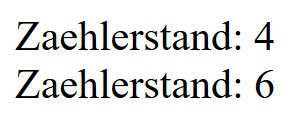
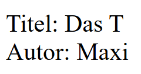
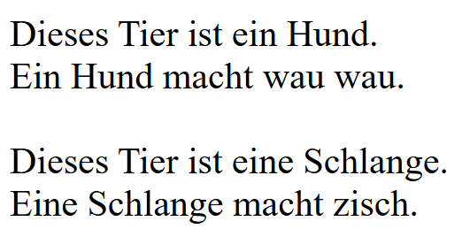
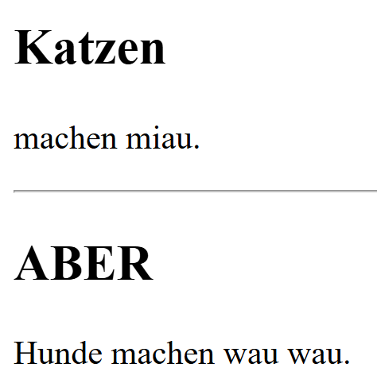
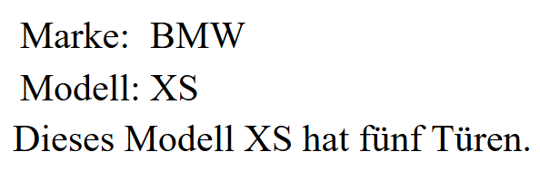
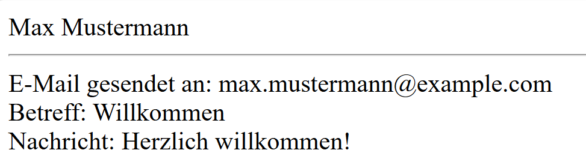

Themenfelder aus dem Curriculum: Keine
Beispiele OOP mit PHP.
Verarbeitung von static. Folgend die Ausgabe:

Verarbeitung von private. Folgend die Ausgabe:

Verarbeitung von protected. Folgend die Ausgabe:

Verarbeitung von Interfaces. Folgend die Ausgabe:

Verarbeitung mit Vererbung. Folgend die Ausgabe:

PHP kann auch Getter und Setter. Folgend die Ausgabe:
